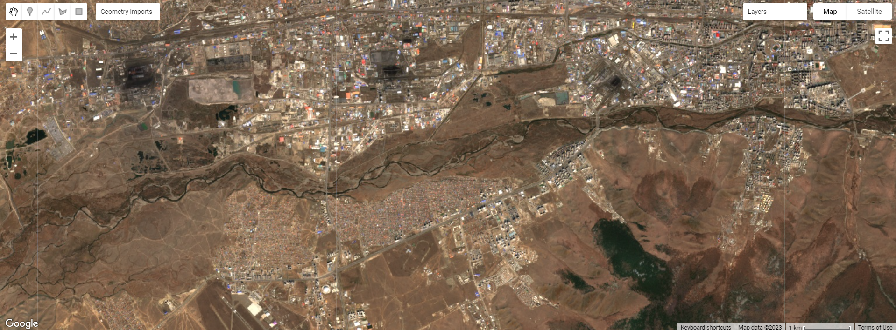
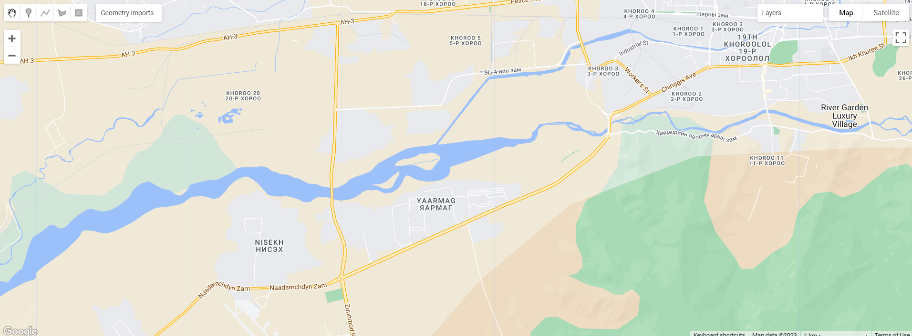
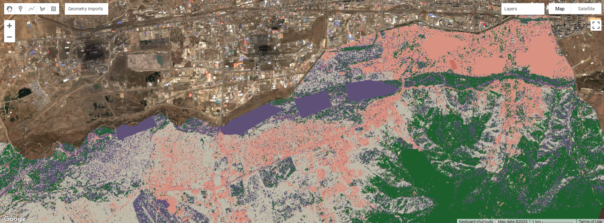
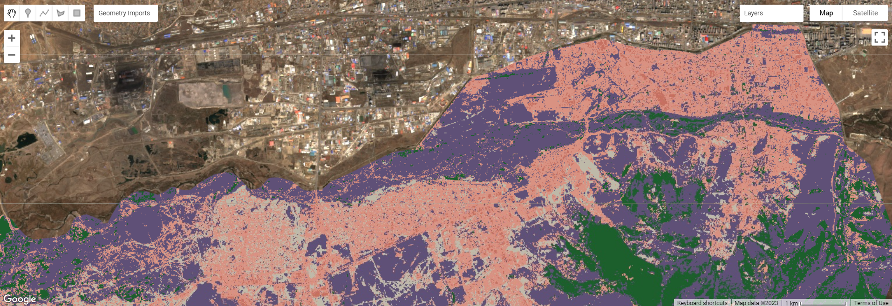
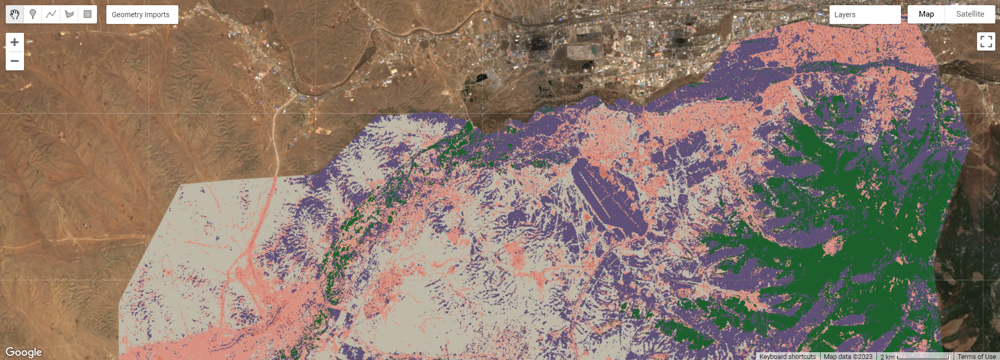
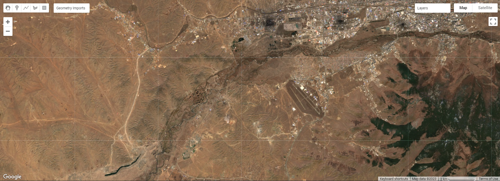

6 Week 6: Classification 1
6.1 Learning Objectives
Using vector and EO Data
Landuse Landcover Classification Methods
Train-test splits
6.2 Summary of Key Concepts
6.2.1 Overview of content:
In this week’s lecture we looked at examples of land-use/ landcover (LULC) that we had encountered before throughout this module, before diving into classification methodologies.
Applications of LULC classifications include urban expansion (MacLachlan et al 2017), air pollution (Fuldalu and Alta 2021), urban green spaces (Shahtahmassebi et al 2021), forest monitoring (Hansen et al) and forest fires (Chuvieco and Congalton 1989). We then looked at classification methods which this learning diary entry will focus on.
6.2.2 Classification Methodologies: Classification and Regression Trees (CART)
Classification Trees: Classifying data into 2 or more discrete categories
What variable do we start a classification tree with (the root of the tree)? We use the Gini Impurity to determine that. The variable with the lowest impurity goes at the root, and use the Gini Impurity at each branch to split the nodes/ leaves.
\[ Gini Impurity = 1 - (probability-of-yes)^2 - (probability-of-no)^2 \]
Take weighted average for the variable too, and lowest impurity wins.
We use classification trees for landcover classification
Regression Trees: Predicting continuous dependent variables.
We use Sum of Squared Residuals to divide the data into sections.
Lowest SSR wins and is used as the root of the tree. Repeat process of finding SSR for each segment to continue the classification. Each leaf is a numeric value. We can do this with many predictor variables
Overfitting occurs when we have a leaf with just one value (pure output). We want a good balance between bias and variance.
To prevent overfitting, we limit how trees grow by setting a minimum number of observations in a leaf (from the top); (e.g. 20 pixels so that there is some degree of generalisation)
or we can do weakest link pruning (with tree score). WLP prunes from the bottom. Tree score = SSR + tree penalty (alpha) * T (number of leaves).
Weakest Link Pruning process: Run a full tree with all data. Look at leaves’ SSR. Remove a leaf, and see if SSR improves. To do that we use Tree Score. Key thing is tree penalty. We compute tree penalty by using a full size regression tree with all the data. Start with a value of 0 (which gives lowest tree score). Save values of alpha that gives a lower tree score than when a=0. Increase value of alpha until we get a lower tree score than the original.
Train-test split (70-30). Use training data and use alpha values from before. Calculate SSR. Calculate alpha by letting it run.
Using test data, and tree, calculate sum of squared residuals (for all values of alpha) –> use the value of alpha which gives lowest tree score.
Cross-validate by changing the data in test-train sets. Do it 10 times (ten-fold cross validation). Use the value of alpha that gives lowest SSR across all cross-validation
This process makes the tree more generalisable, and is basically identifying the weakest leaves and removing them from the tree
Different classifiers give different results, but we can’t really say one classifier is better than another
6.2.3 Comparison of classifiers
Decision tree deals with collinearity
In a DT, each division could be based on different bands from input. While in SVM, its a multi-dimensional array plot and fitting planes
RF and DT have low computation cost and easy to visualise
SVM don’t deal with collinearity because you’re fitting a plane ((using x,y values) rather than dividng data
Uses a lot of computer memory
6.3 Summary of Practical Content
6.3.0.1 Overview:
Load admin boundary vector data
Load raster data by specifying image collection, date range, intersecting region of interest, and cloud percentage threshold.
We can either use median value of all pixels through the image stack (lazy way that neglects temporal variation in data) or take deciles (Hansen’s way) –> pattern vector becomes much bigger to draw upon the seasonality of the data.
Add polygons for landcovers we are interested in classifying or use a pixel approach to get more accurate results
Insert a train-test split here to test the model
Set the bands we are using for classification and classification property.
Train classifier, classify image, and plot output.
Note the trap of spatial autocorrelation when selecting POIs and pixels to train classifiers
6.3.0.2 Practical Output
For this practical I used Ulanbaatar, the capital of Mongolia. However, due to the level 2 Administrative Boundaries and to obtain different landcovers, the output covers the southern outskirts of Ulanbaatar.
I first obtained an image stack that contained median values of all pixels over the date range (rather than percentiles).


Ulanbaatar
We see that the river appears more like a line in the satellite imagery while it is drawn as a polygon in Google Maps. We also note the demarcation of “forest” and “mountainous” areas on Google Maps and how it appears on the satellite imagery.


Comparing classification methods
The first method trained the model using the polygons extracted, while the polygons I drew were not very precise, hence you can see polygons in the first image such as in the river and urban areas. The second method selected some pixels from each landcover class I drew, generated a train-test split, and extracted values to train the model. This pixel approach resulted in a smoother classification compared to the first one.


Observing accuracy
We see that for the large administrative area with multiple landcovers, the pixel method is fairly accurate, and the overall accuracy was 78.84%.
6.4 Application of Key Concepts and Skills
With the accessibility of Google Earth Engine, there is an increasing number of landcover classification studies being done, some of which I presented in last week’s learning diary entry. For this learning diary, I will focus on various types of LULC classification methods and how they differ.
Phiri and Morgenroth’s (2017) review of LULC classification methods and how they have evolved over time is especially insightful and summarises these developments well. They mention how most classification methods (e.g. ) were developed in the 1970s and 80s, but advancements in classifiers and algorithms have come after the 2000s.
| Time period | Developments |
|---|---|
| 1970s |
|
| 1980s |
|
| 1990s |
|
| 2000s |
|
| 2010s |
|
They (2017) concluded that OBIA classification seems to be the most common method and has major advantages, but its limitations include challenges in selecting the optimal segmentation scale, which can generate errors due to over- or under-segmentation, and misclassification of small landcover types due to the low/medium spatial resolution of Landsat images. There is not one best classification method for Landsat images, but researchers have to weigh strengths and limitations of each methods for their research purposes, and consider factors such as pre-processing quality and type of Landsat images being used. Some sources of errors in pre-processing include orthorectification and radiometric correction, which brings us back to what we learnt in week 3 about corrections, and we have to be conscious about such sources of errors and not assume all images are perfectly corrected.
6.5 Reflection
This week, we dived into landuse landcover classification which is a big part of remote sensing research, learning more about the types of classifiers that can be used to achieve these objectives. I would be interested in experimenting with other locations and other classifiers to reproduce this week’s practical output, and see how classifier parameters can be tuned.
The article covered in the Application section was also particularly helpful in understanding how landcover classification in remote sensing has evolved over time. It is also a reminder of how as remote sensing researchers, we should remain curious and updated with new developments in methodologies in the remote sensing field, as it is constantly evolving and growing.